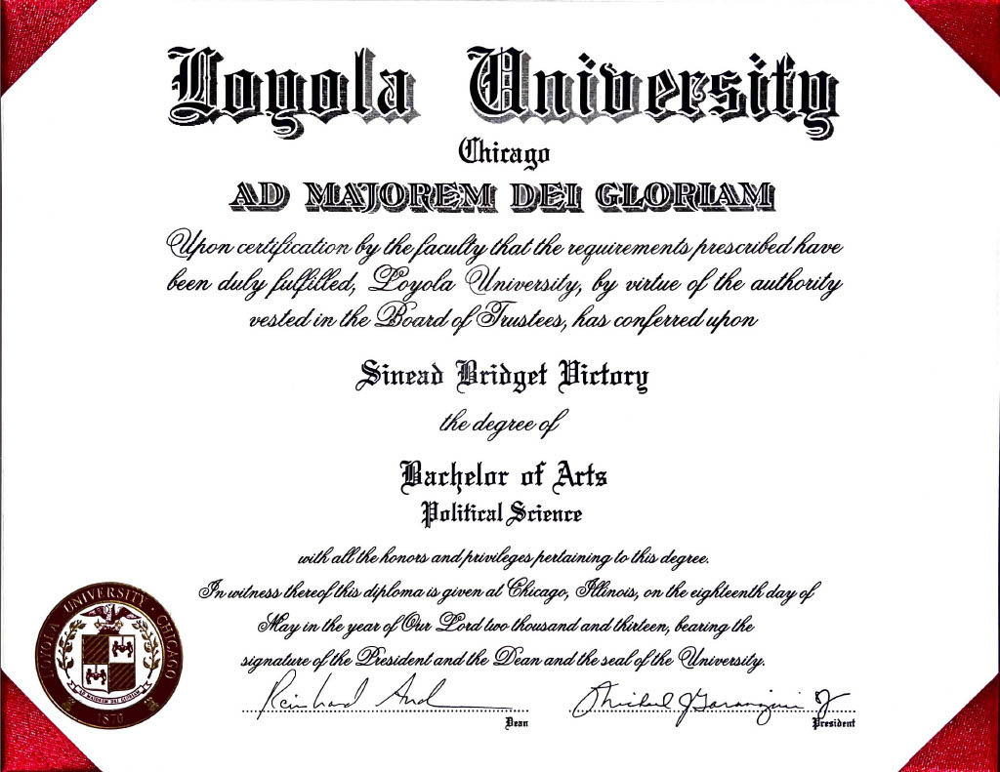

Master of Library and Information Science
Wayne State University
Anticipated 2024
Master of Arts in Educational and Instructional Technology
Western Michigan University
Cumulative GPA: 4.0
Post-Baccalaureate Secondary Education Program in Social Studies
University of Michigan-Dearborn
Minors in History and Political Science

Bachelor of Arts in Political Science
Loyola University Chicago
Minors in History and Spanish

State of Michigan Professional Teaching Certification
Social Studies (RX), Political Science (CD), and History (CC) Endorsements
Library Media (ND) Endorsement Anticipated 2024